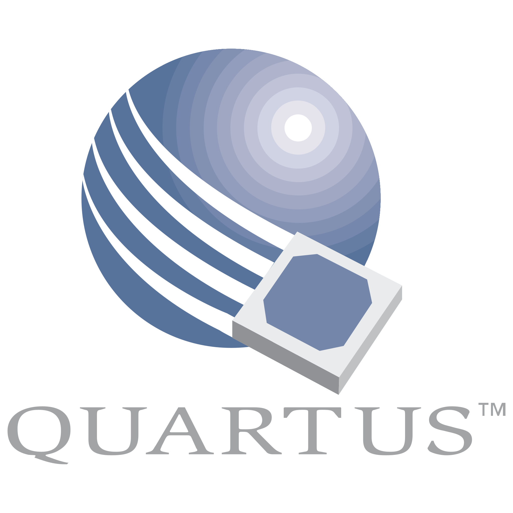

Educational RISC-V Processor Implementation
RISC-V is a processor architecture that has continued to develop and increase its influence in the processor space since its inception. Today, it has become even more important and popular for various reasons. Overall, RISC-V has evolved into a powerful and flexible processor architecture that continues to gain popularity and expand into many areas of technology. This thesis implements a model of a pipelined processor based on the RISC-V architecture, implemented in the hardware description language VHDL, with an emphasis on the simplicity of the final design. To confirm the correct operation of the implemented model, a large number of individual commands and sequences of commands were executed.
Features:
- 5-stage pipelined RISC-V processor
- Memory interface for instruction and data access
- Hazard detection and forwarding mechanisms
- Comprehensive testbench for functional validation
Languages & Tools Used:
-
 VHDL
VHDL
-  Intel Quartus
-
 ModelSim
ModelSim